Vaihe 3 – materiaalit
Kapteenin hyväksyttävänä: läppärin sivu ja kolme puhelinnäkymää. Ne ovat oikeaa HTML:ää (saarniverstas.html, puhelin-booking.html, puhelin-keittiolaskuri.html, puhelin-tarjouspyynto.html). Kuvat ovat _video/materiaali/-kansion kaappauksia. Jakso: vertailusivu.
Läppärin sivu (1440×900, tiheys 2)
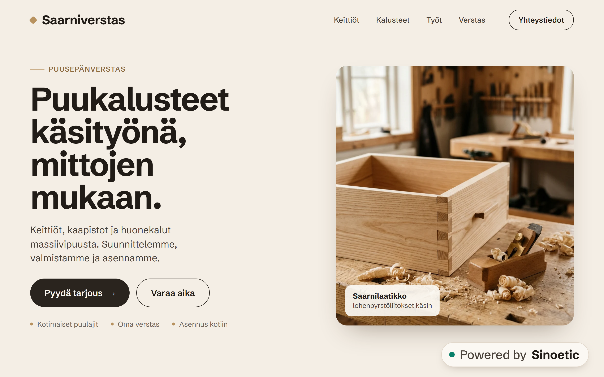
Saarniverstas – keksitty puusepänverstas (ei YTJ:ssä, ei verkossa 17.11.2026). "Powered by Sinoetic" oikeassa alakulmassa.Puhelinnäkymät (390×844, tiheys 3)
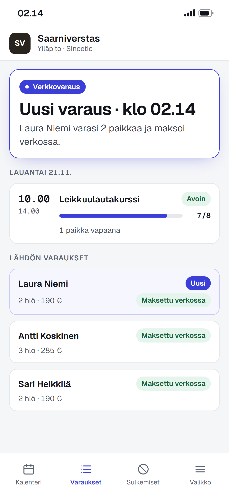
Ajanvaraus – Sinoetic Bookingin ylläpidon komponentit (Geist, #3B3FD8). "Uusi varaus · klo 02.14".
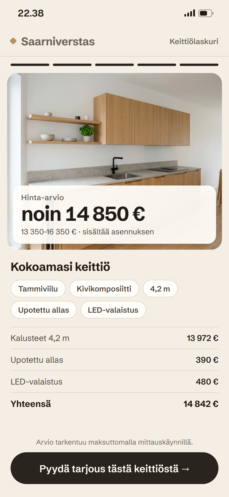
Keittiölaskuri – neutraali keittiö (Higgsfield), keksityt hinnat, hintamoottorin kaava. Ei mitään Koronalta.
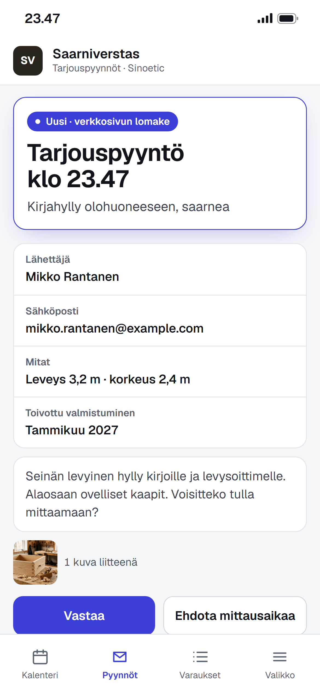
Tarjouspyyntö – keksityt yhteystiedot (example.com), klo 23.47.
Koodiversion verstaskuvat (Nano Banana 2, 1K)
 a – pöydän taso, läppäri ja puhelin samalla linjalla (oletus)
a – pöydän taso, läppäri ja puhelin samalla linjalla (oletus)
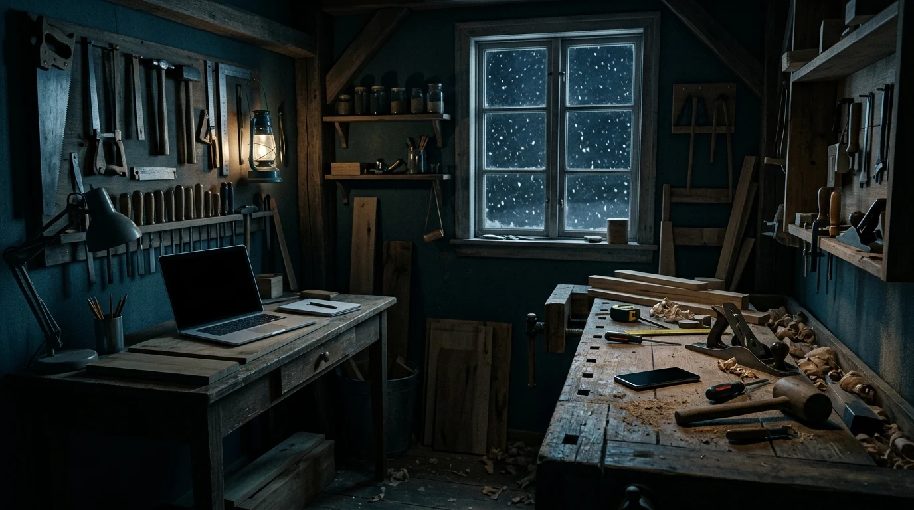
b – hieman ylempää, koko verstas
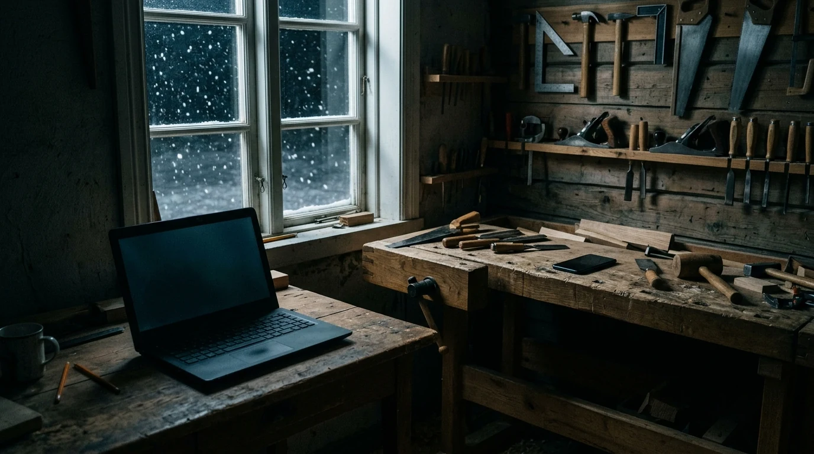
c – läppäri edessä, puhelin taaempana
Versio A: alku- ja loppukuvat (Nano Banana Pro, 2K)
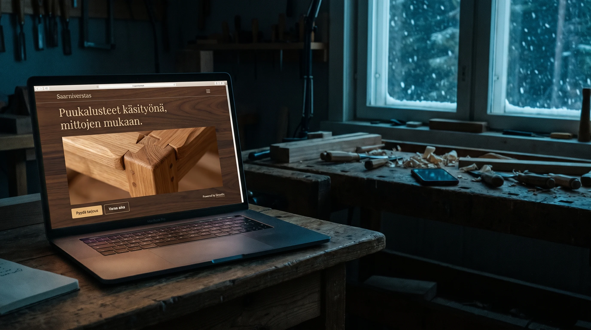
A1-1 – "Powered by Sinoatic", "MacBook Pro"
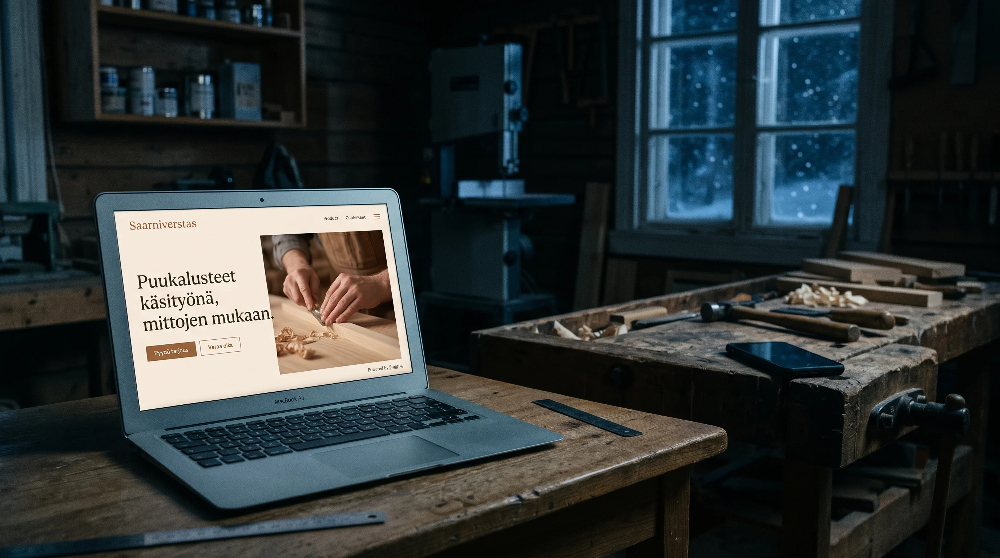
A1-2 – "Varaa dika", "Powered by Sinartic", "Product Contentant", "MacBook Air", kädet
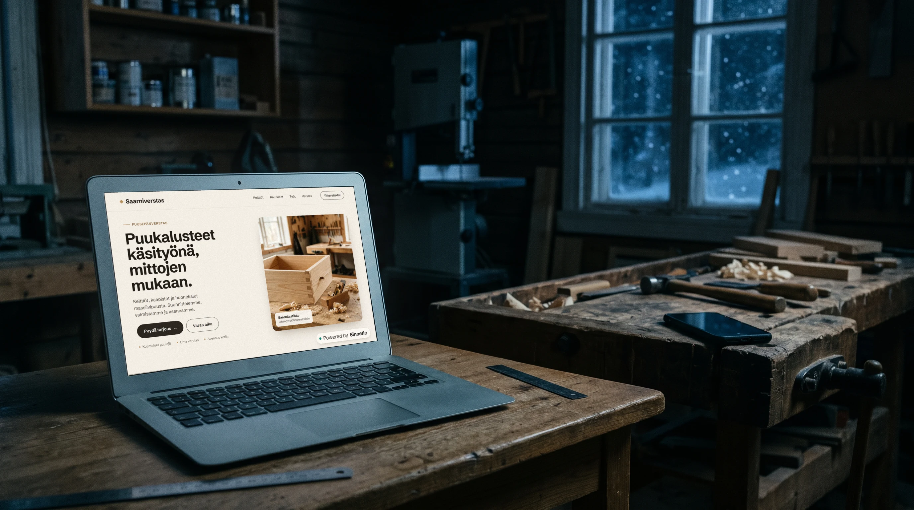
A1-K – A1-2 + oikea sivu perspektiivillä (videon alkukuva)
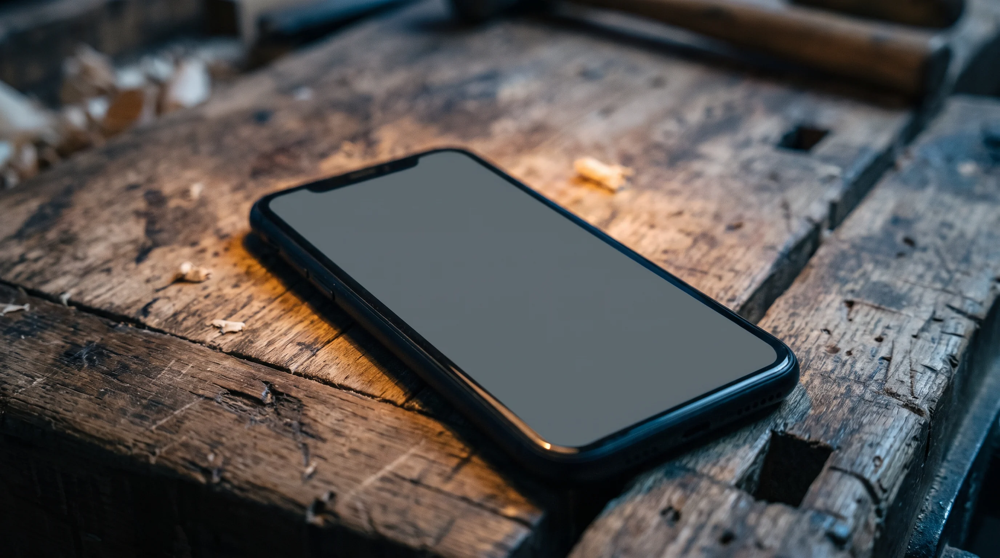
A2-1 – puhelin penkillä, tyhjä ruutu (valittu)
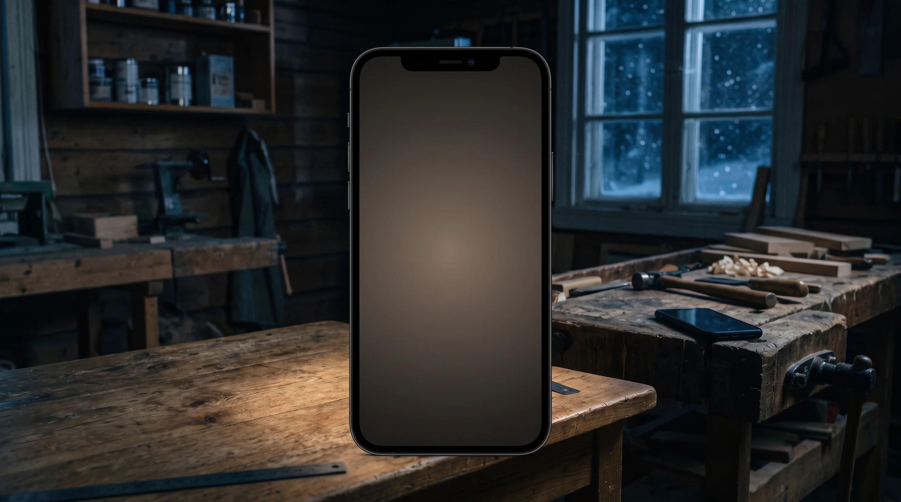
A2-2 – puhelin leijuu, hylätty
 A2-K – A2-1 + oikea Booking-näkymä (videon loppukuva)
A2-K – A2-1 + oikea Booking-näkymä (videon loppukuva)